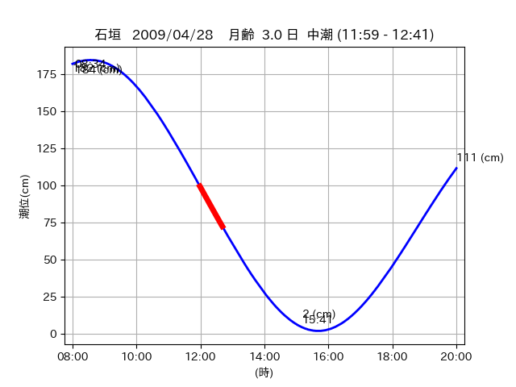

<!DOCTYPE html>
<html>
<head>
    
    <meta http-equiv="content-type" content="text/html; charset=UTF-8" />
    
        <script>
            L_NO_TOUCH = false;
            L_DISABLE_3D = false;
        </script>
    
    <style>html, body {width: 100%;height: 100%;margin: 0;padding: 0;}</style>
    <style>#map {position:absolute;top:0;bottom:0;right:0;left:0;}</style>
    <script src="https://cdn.jsdelivr.net/npm/leaflet@1.9.3/dist/leaflet.js"></script>
    <script src="https://code.jquery.com/jquery-3.7.1.min.js"></script>
    <script src="https://cdn.jsdelivr.net/npm/bootstrap@5.2.2/dist/js/bootstrap.bundle.min.js"></script>
    <script src="https://cdnjs.cloudflare.com/ajax/libs/Leaflet.awesome-markers/2.0.2/leaflet.awesome-markers.js"></script>
    <link rel="stylesheet" href="https://cdn.jsdelivr.net/npm/leaflet@1.9.3/dist/leaflet.css"/>
    <link rel="stylesheet" href="https://cdn.jsdelivr.net/npm/bootstrap@5.2.2/dist/css/bootstrap.min.css"/>
    <link rel="stylesheet" href="https://netdna.bootstrapcdn.com/bootstrap/3.0.0/css/bootstrap-glyphicons.css"/>
    <link rel="stylesheet" href="https://cdn.jsdelivr.net/npm/@fortawesome/fontawesome-free@6.2.0/css/all.min.css"/>
    <link rel="stylesheet" href="https://cdnjs.cloudflare.com/ajax/libs/Leaflet.awesome-markers/2.0.2/leaflet.awesome-markers.css"/>
    <link rel="stylesheet" href="https://cdn.jsdelivr.net/gh/python-visualization/folium/folium/templates/leaflet.awesome.rotate.min.css"/>
    
            <meta name="viewport" content="width=device-width,
                initial-scale=1.0, maximum-scale=1.0, user-scalable=no" />
            <style>
                #map_1a87761e19b7ff11bbaa81c93b232e30 {
                    position: relative;
                    width: 2048.0px;
                    height: 1600.0px;
                    left: 0.0%;
                    top: 0.0%;
                }
                .leaflet-container { font-size: 1rem; }
            </style>
        
</head>
<body>
    
    
            <div class="folium-map" id="map_1a87761e19b7ff11bbaa81c93b232e30" ></div>
        
</body>
<script>
    
    
            var map_1a87761e19b7ff11bbaa81c93b232e30 = L.map(
                "map_1a87761e19b7ff11bbaa81c93b232e30",
                {
                    center: [24.216, 124.0],
                    crs: L.CRS.EPSG3857,
                    ...{
  "zoom": 12,
  "zoomControl": true,
  "preferCanvas": false,
}

                }
            );

            

        
    
            var tile_layer_822ac110dae4b2fc4b38b45b36be36d7 = L.tileLayer(
                "https://cyberjapandata.gsi.go.jp/xyz/seamlessphoto/{z}/{x}/{y}.jpg",
                {
  "minZoom": 0,
  "maxZoom": 18,
  "maxNativeZoom": 18,
  "noWrap": false,
  "attribution": "\u5730\u7406\u9662\u5730\u56f3",
  "subdomains": "abc",
  "detectRetina": false,
  "tms": false,
  "opacity": 1,
}

            );
        
    
            tile_layer_822ac110dae4b2fc4b38b45b36be36d7.addTo(map_1a87761e19b7ff11bbaa81c93b232e30);
        
    
            var marker_166c9dac99af4d1303d238e4ee825406 = L.marker(
                [24.2738, 123.7821],
                {
}
            ).addTo(map_1a87761e19b7ff11bbaa81c93b232e30);
        
    
            var icon_dd024d7b27552b1577f3cd0a4734a8d5 = L.AwesomeMarkers.icon(
                {
  "markerColor": "orange",
  "iconColor": "white",
  "icon": "info-sign",
  "prefix": "glyphicon",
  "extraClasses": "fa-rotate-0",
}
            );
        
    
        var popup_0c0e00f4c24667eb143e49752cc5e3f2 = L.popup({
  "maxWidth": "100%",
});

        
            
                var html_a9078af5859b81ef598b1467fa498651 = $(`<div id="html_a9078af5859b81ef598b1467fa498651" style="width: 100.0%; height: 100.0%;"><table><tr><td></td></tr><tr><td><center>20090428 No.1 </center></table></td></tr></table</div>`)[0];
                popup_0c0e00f4c24667eb143e49752cc5e3f2.setContent(html_a9078af5859b81ef598b1467fa498651);
            
        

        marker_166c9dac99af4d1303d238e4ee825406.bindPopup(popup_0c0e00f4c24667eb143e49752cc5e3f2)
        ;

        
    
    
                marker_166c9dac99af4d1303d238e4ee825406.setIcon(icon_dd024d7b27552b1577f3cd0a4734a8d5);
            
    
            var poly_line_93b2b97b70efaea9c2dbe837f763e4af = L.polyline(
                [[24.2738, 123.7821], [24.2732, 123.7836]],
                {"bubblingMouseEvents": true, "color": "#00FFFF", "dashArray": null, "dashOffset": null, "fill": false, "fillColor": "#00FFFF", "fillOpacity": 0.2, "fillRule": "evenodd", "lineCap": "round", "lineJoin": "round", "noClip": false, "opacity": 1.0, "smoothFactor": 1.0, "stroke": true, "weight": 3}
            ).addTo(map_1a87761e19b7ff11bbaa81c93b232e30);
        
    
            var marker_8d4f0f8112a8559652da4dfc10b86d29 = L.marker(
                [24.2694, 123.7975],
                {
}
            ).addTo(map_1a87761e19b7ff11bbaa81c93b232e30);
        
    
            var icon_96c5250b2f7d90b8734f148382e8ed5c = L.AwesomeMarkers.icon(
                {
  "markerColor": "orange",
  "iconColor": "white",
  "icon": "info-sign",
  "prefix": "glyphicon",
  "extraClasses": "fa-rotate-0",
}
            );
        
    
        var popup_5d64987b5becb9178dca4e58a4fd94bb = L.popup({
  "maxWidth": "100%",
});

        
            
                var html_0bf68374d8cd33cf969067e81736d0aa = $(`<div id="html_0bf68374d8cd33cf969067e81736d0aa" style="width: 100.0%; height: 100.0%;"><table><tr><td></td></tr><tr><td><center>20090428 No.2 </center></table></td></tr></table</div>`)[0];
                popup_5d64987b5becb9178dca4e58a4fd94bb.setContent(html_0bf68374d8cd33cf969067e81736d0aa);
            
        

        marker_8d4f0f8112a8559652da4dfc10b86d29.bindPopup(popup_5d64987b5becb9178dca4e58a4fd94bb)
        ;

        
    
    
                marker_8d4f0f8112a8559652da4dfc10b86d29.setIcon(icon_96c5250b2f7d90b8734f148382e8ed5c);
            
    
            var poly_line_7e9fd8d376337e62fcd50d36cab139a4 = L.polyline(
                [[24.2694, 123.7975], [24.2702, 123.7924]],
                {"bubblingMouseEvents": true, "color": "#FF00FF", "dashArray": null, "dashOffset": null, "fill": false, "fillColor": "#FF00FF", "fillOpacity": 0.2, "fillRule": "evenodd", "lineCap": "round", "lineJoin": "round", "noClip": false, "opacity": 1.0, "smoothFactor": 1.0, "stroke": true, "weight": 3}
            ).addTo(map_1a87761e19b7ff11bbaa81c93b232e30);
        
    
            var marker_c0a48756549d01fa3068a3993a65c132 = L.marker(
                [24.2192, 123.9976],
                {
}
            ).addTo(map_1a87761e19b7ff11bbaa81c93b232e30);
        
    
            var icon_3f04f30617e4d672faa2e8e2d8f8c929 = L.AwesomeMarkers.icon(
                {
  "markerColor": "orange",
  "iconColor": "white",
  "icon": "info-sign",
  "prefix": "glyphicon",
  "extraClasses": "fa-rotate-0",
}
            );
        
    
        var popup_bf5e310c81226590109d728c26f698b8 = L.popup({
  "maxWidth": "100%",
});

        
            
                var html_788830a7e982ec9b62424f20da5f178f = $(`<div id="html_788830a7e982ec9b62424f20da5f178f" style="width: 100.0%; height: 100.0%;"><table><tr><td></td></tr><tr><td><center>20090428 No.3 </center></table></td></tr></table</div>`)[0];
                popup_bf5e310c81226590109d728c26f698b8.setContent(html_788830a7e982ec9b62424f20da5f178f);
            
        

        marker_c0a48756549d01fa3068a3993a65c132.bindPopup(popup_bf5e310c81226590109d728c26f698b8)
        ;

        
    
    
                marker_c0a48756549d01fa3068a3993a65c132.setIcon(icon_3f04f30617e4d672faa2e8e2d8f8c929);
            
    
            var poly_line_c7feffe73f01051549e12f6a7b3172fb = L.polyline(
                [[24.2192, 123.9976], [24.2129, 124.0023]],
                {"bubblingMouseEvents": true, "color": "#00FFFF", "dashArray": null, "dashOffset": null, "fill": false, "fillColor": "#00FFFF", "fillOpacity": 0.2, "fillRule": "evenodd", "lineCap": "round", "lineJoin": "round", "noClip": false, "opacity": 1.0, "smoothFactor": 1.0, "stroke": true, "weight": 3}
            ).addTo(map_1a87761e19b7ff11bbaa81c93b232e30);
        
</script>
</html>